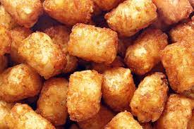

Crispy Tater-Tots

The Dish
Tater tots are a popular snack or side dish made from grated potatoes that are formed into small cylinders and deep-fried until crispy and golden brown. They are typically served hot and are often paired with dips such as ketchup or ranch dressing. Tater tots are often associated with American cuisine and are a common menu item at fast food restaurants and school cafeterias. They can also be found in the frozen food section of many supermarkets and can be easily prepared at home by baking or frying frozen tater tots according to the package instructions. Tater tots are a convenient and tasty way to add a bit of crunch to a meal or snack.
Required Ingredients
- 2 large potatoes
- 1/4 cup flour
- 1/2 teaspoon salt
- 1/4 teaspoon black pepper
- vegetable oil for frying
Step by step guide
- Preheat your oven to 400°F (200°C). Line a baking sheet with parchment paper.
- In a large bowl, mix together the grated potatoes, flour, salt, and pepper.
- Scoop the mixture by the tablespoonful and shape it into small cylinders. Place the tater tots on the prepared baking sheet.
- Bake the tater tots for 20-25 minutes, or until they are golden brown and crispy.
- Alternatively, you can also fry the tater tots in a large pot or deep fryer filled with vegetable oil over medium-high heat until they are golden brown and crispy.
- Serve the tater tots hot, with dips such as ketchup or ranch dressing on the side. Enjoy!